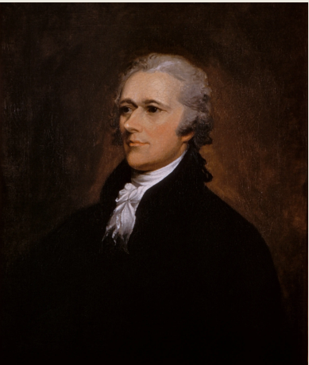
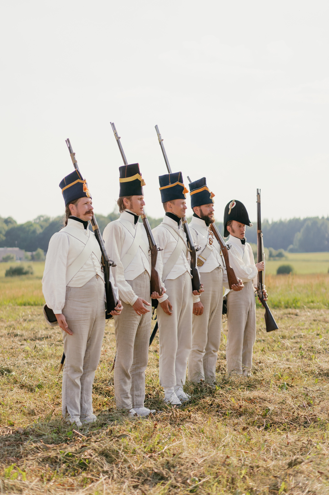
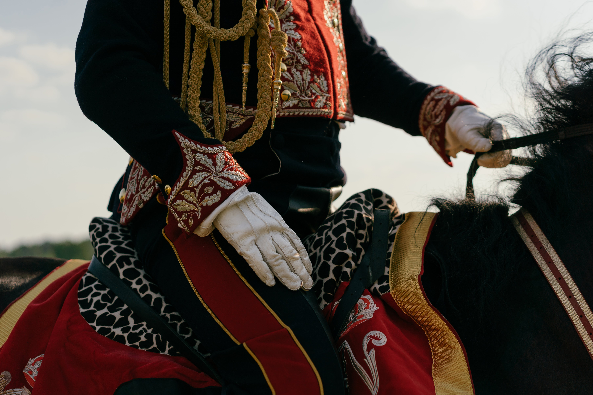
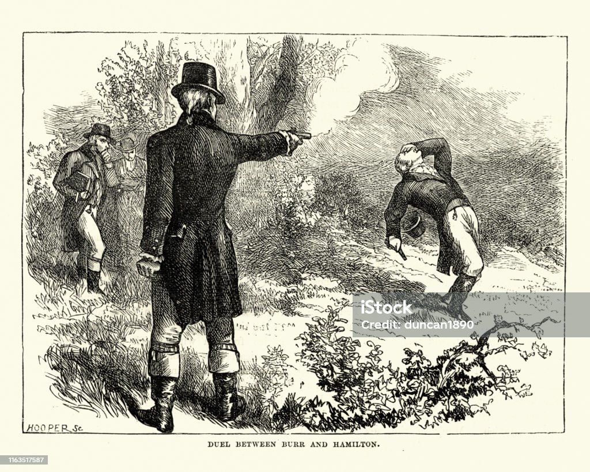
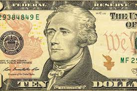
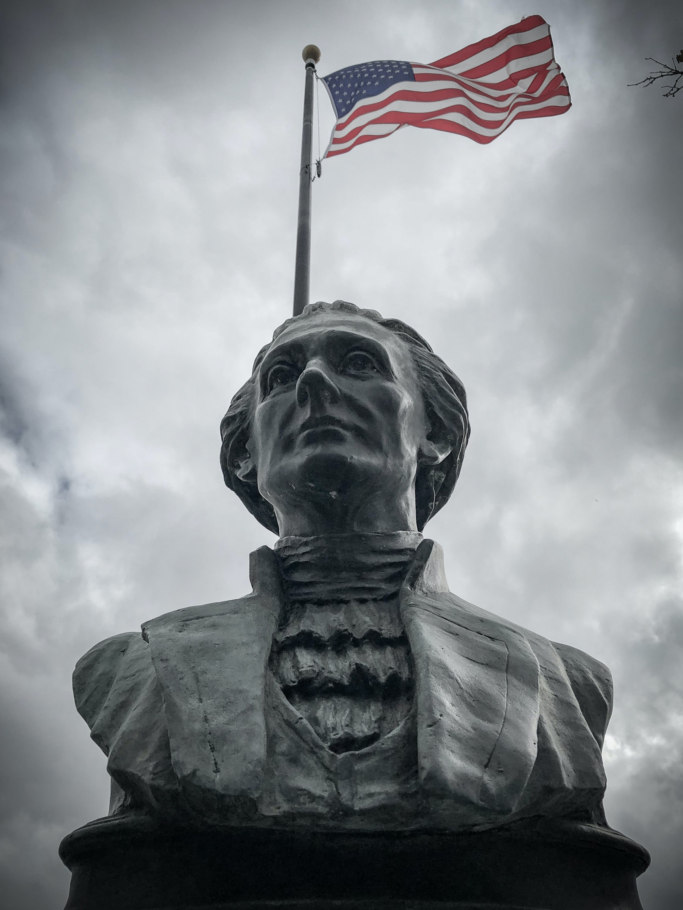

His Life
  
Career
Hamilton is most famous for being one of America's founding fathers, alongside the likes of Geroge Washington and Thomas Jefferson. Prior to this, however, he was an orphaned clerk in the Caribbean. Following his move to North America in 1772, he began his education in New York - allowing him to become a supporter of a Revolution against British rule. In the late 1770's he joined the military and began fighting in the Revolutionary War in order to gain independence from the Imperial rule of Britain.
Following the aftermath of the war, Hamilton began a successful legal and political career, he passed the bar in New York in 1782 and was selected as NY delegate for the Continental Congress. Serving under Washington's administration, he became Secretary of the Treasury and estabished the Bank of New York. His political career came to an end in 1795 following the scandal of his adulterous affair - he would pass away in 1804 from a gunshot wound sustained in a duel against his rival, Aaron Burr.
Timeline
1757
Alexander Hamilton is born on the British island of Nevis
1765
His family moves to St Croix
1773
Hamilton is sent to study at King's College in New York
1775
Hamilton joins the militia
1776
The declaration of Independence by the Continental Congress
1777
Hamilton is appointed Lieutenant Colonel and joins Washington's staff as his aide
1780
Hamilton marries Elizabeth Schuyler
1781
The beginning of the end of the American Revolutionary War
1782
Hamilton admitted to the bar in New York, and is elected to Continental Congress as NY delegate
1783
End of the American Revolution, United States has gained independence from Britain
1784
Hamilton establishes the Bank of New York
1787
Hamilton contributes his writing for the Federalist Papers, writing 51 of the 85 essays regarding how America should be governed
1795
Hamilton resigns his post as Secretary of the Treasury
1797
Hamilton is accused of using Government funds to commit fraud - his extra-marital affair with Maria Reynolds is exposed in the Reynolds Pamphlet
1801
He founds the New York post and advocates for the Federalists to support Thomas Jefferson in the race for President - his eldest son Philip is killed in a duel in New Jersey
1804
Hamilton is killed in a duel with Aaron Burr, his longtime friend and rival
1854
Hamilton's wife Elizabeth Schuyler dies
  